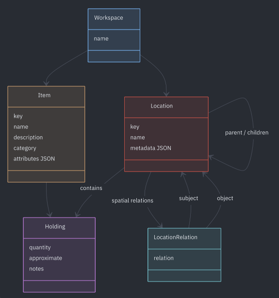

Quilombo: agentes para organizar la vida real
Hace unos días resucité un proyecto que comencé hace más de dos años 1. Estaba haciendo un mueblecito y no encontraba unas bisagras que sabía que en algun lado tenía. Las busqué un montón hasta que claudiqué y las volví a comprar. Cuando regresé de la ferretería puse las baterías del taladro a cargar y me fui a promptear: "Retomá este proyecto porque lo sigo necesitando" .
El proyecto se llama Quilombo y es algo así como un agentic inventory management system, una memoria para que los agente de IA pueda entender y recordar el mundo físico que te rodea y ayudarte a encontrar cosas en él.
Les muestro una conversación real de anoche en mi ChatGPT que está conectado a mi cuenta de Quilombo.
Se las resumo por si les dió fiaca el click:
— Ey, ¿dónde está el alicate?
— En la mesa de luz, opa, ¿dónde va a estar?
La utilidad parece tonta si el lugar para un objeto es obvio o sos un obse que siempre sabe exáctamente dónde guardás cada cosa. Pero en una biblioteca, un taller o ¿una mudanza?, por más que le asignemos un lugar a cada cosa (y lo respetemos) es imposible recordar todo sin un sistema.
Creo que para esto se inventaron las computadoras (por algo en España le dicen "ordenadores" 🤣) y sus compañeras las bases de datos. Pero acá el obstáculo: para ser verdaderamente útiles, estos sistemas requieren tener la información a procesar al detalle y, aún si de alguna manera la generamos o la conseguimos, cargarla con una estructura en particular puede ser lento y aburridísimo (¿existe todavía oficio de "data entry" cuya tarea era llenar formularios con datos?). Un costo incompatible con mantener un inventario doméstico y desestructurado.
Pero ahora los agentes de IA tienen la capacidad de ahorrarnos esta parte tediosa para mantener un inventario actualizado: le podes contár qué hay, dónde y si querés cuánto, usando palabras comunes, el agente estructura y amplía la información y la guarda en la base de datos de Quilombo sin que te haga falta saber cómo. Esa base de datos luego se puede consultar "a mano" (como un clásico buscador), pero también el agente puede consultarla con versatilidad semántica (buscás pilas y quizas pregunta también por baterías) y contestarte de nuevo en lenguaje natural.
Otro ejemplo real, esta vez de carga de datos:
— Registrá la estantería de mi oficina. En el primer estánte tengo el Fluent Python de Ramalho, la versión 2. También la tercera edición de Crucial conversations. Está la cámara de fotos nikon y mi vapeador. Ah, y el estuche de los auriculares.
— Copy that.
Si hasta acá ya suena útil, sumale que los modelos más potentes tienen capacidad de visión, por lo que podés enviarle una foto de ese cajón endemoniado donde todavía tenés el cargador de tu primer Nokia, las tarjetas de crédito que ahora usas via NFC, y el reproductor MP3 tipo huevito con Mayonesa_Remix_Chocolate_2001.mp3 a 96kbps bajado del Ares. El agente convertirá esa foto en una actualización masiva de Quilombo sin que tengas que apretar una tecla.
Quilombo está online (Atención: de vez en cuando puede tardar un minutito en levantar porque uso el free-tier de Render que duerme la instancia. ¿Por qué? ya saben por qué) . Pueden sacarse una cuenta y configurar su agente via MCP para probarlo.
Por supuesto es open source.
El test Oscar
Mi suegro Oscar también tiene un galponcito, un taller multiuso donde se dedica a arreglar con pragmatismo supremo y un par de tablitas el apoyabrazos de una silla de compu recién rota, desarmar el carburador de su combi o construir con esmero monoblocks de lujo para gorriones.
Ahí se pasa las horas con la radio puesta o a veces conversando por teléfono con algun amigo mientras busca y rebusca la tuerquita que le falta.
Oscar no tiene idea y no tiene por qué aprender qué es un MCP, un schema de API o una base de datos vectorial. Pero ya sabe, porque es muy curioso, como "preguntarle a la IA", a "la China", como bautizó a Deepkseek. Una interfaz universal, conversacional (vaya si es otra de las cosas que sabe hacer Oscar), que cualquier persona en cualquier idioma es capaz de hacer.
Mi suegro, y tantas otras personas como él, son los usuarios que imagino. Inteligencia artificial puesta al servicio de la vida real.
El modelo: admitir el desorden y la precisión
Modelé Quilombo para que se adapte al caos del mundo que nos rodea, sin intentar forzar el mundo para que se adapte a un sistema informático.
Un ejemplo: en mi taller tengo un armario con varios estantes y adentro de eso una caja de herramientas roja donde guardo masomenos las cosas de electrónica (el soldador, el estaño y el tester, ponele) pero también hay un organizador de 24 divisiones donde tengo componentes que recupero de cualquier bártulo que desarmo.
Podría inventariar simplemente "todas las cosas de electrónica están en la caja roja en el armario" y ya sería útil. Pero más adelante idear un código a cada compartimiento del organizador, contar cuantos diodos led verdes tengo en el compatimiento A4 y, si quiero, avisarle cuando uso alguno para que haga la actualización de stock.
Dicho de otro modo: las locaciones que reconoce Quilombo tienen una estructura de árbol: la división está en el organizador que está en la caja que está en el estante y este en el armario que está en el taller y es facil "afinar" la información.
Existe un concepto por fuera de la jerarquia de locaciones: el workspace. Una cuenta puede tener muchos workspaces (por omisión se crea Home), un workspace podría estar compartido entre usuarios y podes darle permiso a uno en particular a tu agente (y si querés, con permisos de sólo lectura)
Los objetos, por su parte, guardan nombre, alias, categoría, descripción y atributos libres. Básicamente, si el agente tiene más detalles para mandar que después le sean utiles para encontrar, bienvenido sean, hay lugar para todos.
Un caso especial son los libros: el agente puede consultar Open Library para obtener metadata que aumente, sin esfuerzo, la info de los libros que inventariamos. "Fijate entre mis libros, qué cuento me recomendárías para esta noche lluviosa"
La datita para nerds
Lo descripto arriba se resume más o menos en este diagrama

(ahora que lo veo dibujado, creo que se puede simplificar más este modelo!)El código es un monolito Django con PostgreSQL. Es multiusuario, separa los datos por workspace y expone una API HTTP y un servidor MCP "remoto" (streameable-http es la keyword) con OAuth. MCP es el estándar que permite al cliente (ChatGPT, Claude, OpenClaw o cualquier agente masomenos actualizado) descubra el servicio y así sepa como buscar, leer una vista general del inventario, mover existencias o hacer cambios en lote.
La interfaz web por ahora es mínima y existe para crear una cuenta, buscar inventario cuando te quedaste sin tokens y conectar agentes, pero el camino principal es conversar.

Existe además una skill, que ayuda al agente a usar el MCP. Ahí vive la política conversacional recomendada: buscar antes de afirmar, diferenciar «no registrado» de «no existe», mostrar un borrador antes de modificar, etc.
¿Y qué sigue?
Por ahora quiero ver si alguien quiere usarlo, le sirve y se copa en dar feedback o colaborar.
Más adelante quizas pongo unos mangos para un servidor que no se duerma y registro un dominio recordable (se aceptan cafecitos), luego mejoro un poco el diseño ascético (o acético, también le aplica) que tiene ahora y eso me sirve para salir en el directorio de tools integrables de los principales "chats" de IA.
Pero sé que todavía ni Quilombo ni el ecosistema de agentes están maduros para que los "Oscares del mundo" puedan instalarse esto por su cuenta y usarlo domésticamente. Mientras tanto es un experimento que me permite aprender los cimientos de esta era "agéntica" (también hice mis pinitos con telegram-acp-bot ) y me tiene particularmente entusiasmado.
Y ojalá sepa, para siempre, dónde está la mecha de 6mm que nunca encuentro.
-
Lo empecé cuando ChatGPT sacó la funcionalidad de customizar GPTs con un prompt y la especificación de una API web con la que podía interactuar. La prehistoria de un "agente". ↩
Comentarios
Comments powered by Disqus